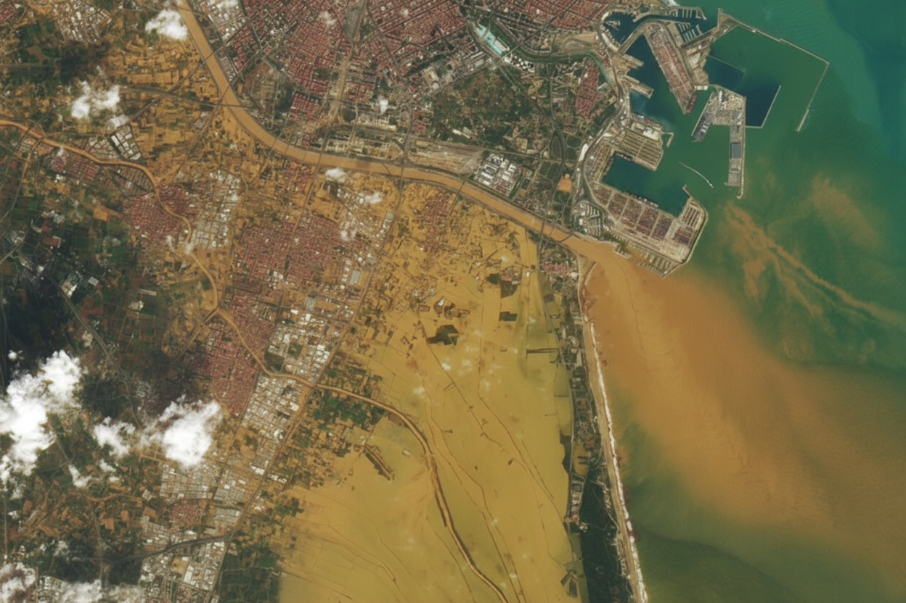
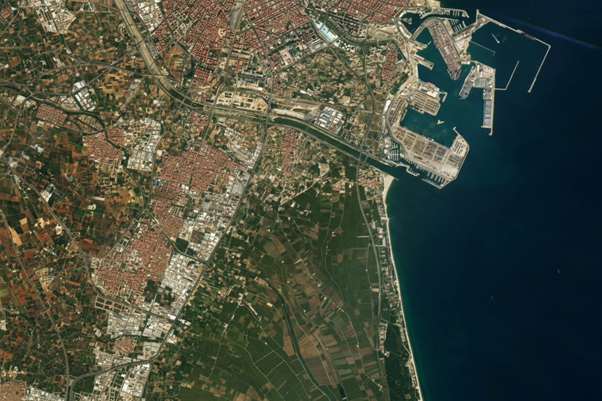

Un análisis detallado de la DANA que azotó la provincia de Valencia el 29 de octubre de 2024.
DANA Valencia: El episodio del siglo
El 29 de octubre de 2024, la Comunitat Valenciana vivió uno de los episodios meteorológicos más catastróficos de su historia reciente. Una Depresión Aislada en Niveles Altos (DANA) se situó en una posición crítica para canalizar un flujo de humedad mediterránea excepcional hacia el interior de la provincia de Valencia.
La mancha de la catástrofe
La distribución de la lluvia no fue uniforme. Mientras en el litoral las intensidades fueron altas pero manejables, en el interior se formó un sistema de tormentas regenerativas. Este "tren de núcleos" descargó cantidades superiores a los 300 mm en una franja que cruza las cuencas del Magro y el Poyo, áreas que habitualmente están secas.
💡 Explora los municipios en el mapa para ver los acumulados totales de 24 horas.
Distribución espacial de precipitaciones
Acumulados por municipio durante el episodio.
Leyenda (mm)
0
50
100
200
400
600+
💡 Explora los municipios en el mapa para ver los acumulados totales de 24 horas.
Turís: El récord imbatible
La estación de Turís (Mas de Calabarra) registró un dato que redefine la climatología española: 772 mm en un solo día. Lo más crítico fue la eficiencia de la tormenta, que llegó a descargar 185 mm en tan solo una hora. Esta intensidad brutal es la que convirtió los barrancos en muros de agua imposibles de contener.
Turís batió el récord histórico de España en 1h, 6h y 12h.
Gráfica de intensidad de la lluvia
Sincronía del desastre
Al comparar estaciones como Utiel, Chiva y Turís, observamos una pendiente de acumulación casi vertical durante la tarde del 29 de octubre. Mientras en Utiel el pico fue matinal (causando el desbordamiento del río Magro), en el centro de la provincia la intensidad máxima se desplazó hacia la tarde, coincidiendo con la bajada de las riadas hacia la Horta Sud.
Comparativa entre estaciones
El motor del evento: Anomalía térmica
Las DANAs son fenómenos habituales en otoño, pero su severidad depende del "combustible". En 2024, el Mediterráneo presentaba temperaturas de hasta 2°C por encima de la media histórica. Este exceso de energía térmica aumentó la evaporación y la inestabilidad, permitiendo que las nubes retuvieran y descargaran una cantidad de agua sin precedentes.
Temperatura del mar
Impacto en la cuenca del Turia y L'Albufera
La comparativa satelital revela la magnitud de la inundación: a la izquierda, el paisaje habitual; a la derecha, el suelo saturado por el exceso de agua y la gran mancha de lodo vertida al Mediterráneo.
Desliza para observar cómo el agua ha redefinido temporalmente la línea de costa y el cauce del río.
Antes y después
Evolución visual tras el episodio.


FUENTE: NASA
Un nuevo escenario climático
El episodio de octubre de 2024 marca un antes y un después en la gestión del riesgo meteorológico. La combinación de una atmósfera dinámica y un mar sobrecalentado generó un evento cuya magnitud técnica superó todos los umbrales de aviso previos, recordándonos la vulnerabilidad del territorio ante los extremos climáticos.
DAVID DELGADO PACHECO